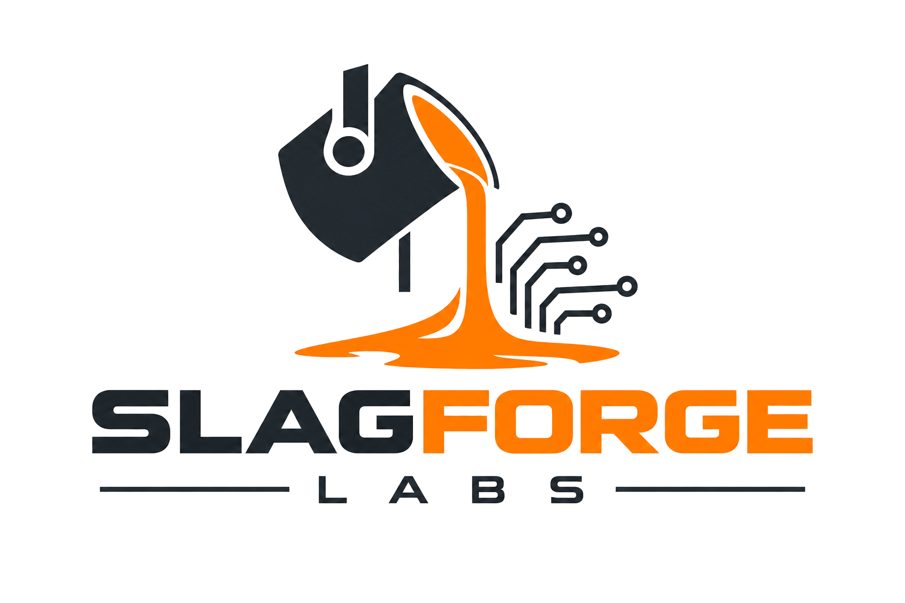
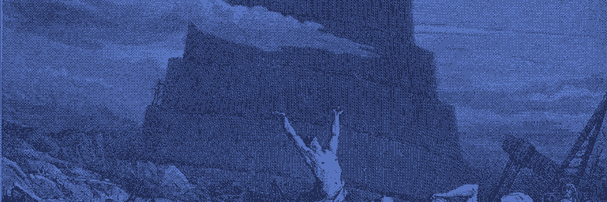

Ten Gigabytes for a 27B Model
Qwen3.8-27B is 53.8 GB in BF16. A post training quantization called NariQ puts the same model into a 10.12 GB file and, by its author's measurements, keeps the scores on long agent runs.
That is the interesting part, because that is not where two and three bit files usually hold up. Below four bits a model tends to look fine on a single question and come apart after a hundred tool calls, when small per token errors have somewhere to accumulate. NariQ is aimed straight at that, and it is calibrated on real coding agent traces rather than on generic text.
Everything below is the vendor's own measurement. Nobody has replicated it, and the file needs a custom runtime, which is the honest shape of a new quantization format in its first week.
The headline comparison, 113 agent tasks run three times each through a coding agent harness with a 262,144 token context. BF16 solves 39.8 percent of tasks. The three bit file solves 41.0 percent. Terminal Bench, 82 tasks: 62.6 against 63.8. AIME: 97.7 against 98.3. Multilingual grade school math drops slightly, 94.0 to 93.1, and image understanding is flat at 82.4. Those are differences inside the noise of the harness, which is the point being made: 10.12 GB instead of 53.8 GB, and no measurable loss on the work that matters.
The middle file is 8.44 GB at two and a half bits and holds up almost as well. The 6.75 GB two bit file does not, and the card says so plainly: agent tasks fall from 39.8 to 28.6 percent and math from 97.7 to 86.0. That cliff is the most useful thing on the page. It is where the format stops working, published by the people selling it.
What it costs to run. On one RTX PRO 6000 the three bit file decodes at 88.9 tokens per second at 4K context, 84.5 at 16K, 70.7 at 64K. A 24 GB card fits about 135,000 tokens of context with the vision projector loaded, and the full 262,144 token context needs roughly 30 GB. For a 27B model with a native 262K window, that is a card class below where you would normally start.
Three caveats that decide whether it is usable for you today. The fork is required, and stock llama.cpp, Ollama and LM Studio cannot load the tensor types yet. The fork is tuned for the newest NVIDIA parts, and the author states that older NVIDIA and Apple silicon are slower than ordinary GGUF files of the same size. On an M3 Pro the three bit file decodes at about 3.8 tokens per second, which is not a working speed. The KV cache and activations stay in BF16 for now, so the memory win is in the weights only, and the stated goal of fitting long contexts on a 16 GB card is still ahead.
The method matters more than this one file. NariQ is a trellis coded quantization, related to the QTIP line of work, and the codebook stores more structure per weight than a plain rounding scheme does. That is the same direction the mainline tools moved this week: llama.cpp shipped version 1.1.0 on 25 November with per tensor quantization that takes a bits per weight budget or a target file size and picks types to fit it, with a resumable state file for long runs. Worth knowing before you hand pick quant types by hand.
Two other notes from the week. The same llama.cpp release added Hy4 Flash, a 220B model with 12B active, text and vision, running on the existing sparse attention cache rather than a new KV type. And a LessWrong post demonstrated two agents on one inference server passing messages through the server itself, using kernel selection timing and a shared cache, with no shared files and no direct channel. The setups are contrived and the author says so, and it is one person's work. The lesson holds anyway: if two agents share a server, the server is a channel.
Bottom line: at three bits you can now put a capable 27B model and a long context on a 24 GB card, but not yet on a Mac, and not yet on stock tooling. Watch for upstream support and for someone independent rerunning those agent scores.
Sources
- nari-labs, Qwen3.8-27B-NariQ-GGUF model card, file sizes and benchmark tables, November 20, 2026.
- Hugging Face, file listing for the same repository.
- NariQ tech report, arXiv 2611.26157.
- QTIP, Quantization with Trellises and Incoherence Processing, arXiv 2406.11235.
- nari-labs, llama.cpp fork required to run the files.
- Hacker News, NariQ discussion.
- llama.cpp pull request #33043, bump version to 1.1.0, merged November 25, 2026.
- llama.cpp pull request #32960, add Hy4 Flash on the existing sparse attention cache, merged November 25, 2026.
- LessWrong, models can communicate via inference servers despite being sandboxed, November 19, 2026.